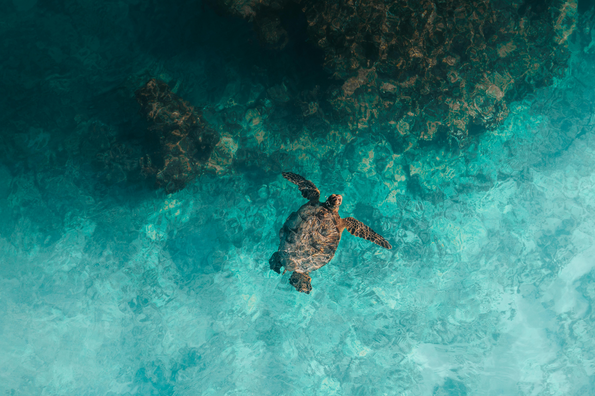
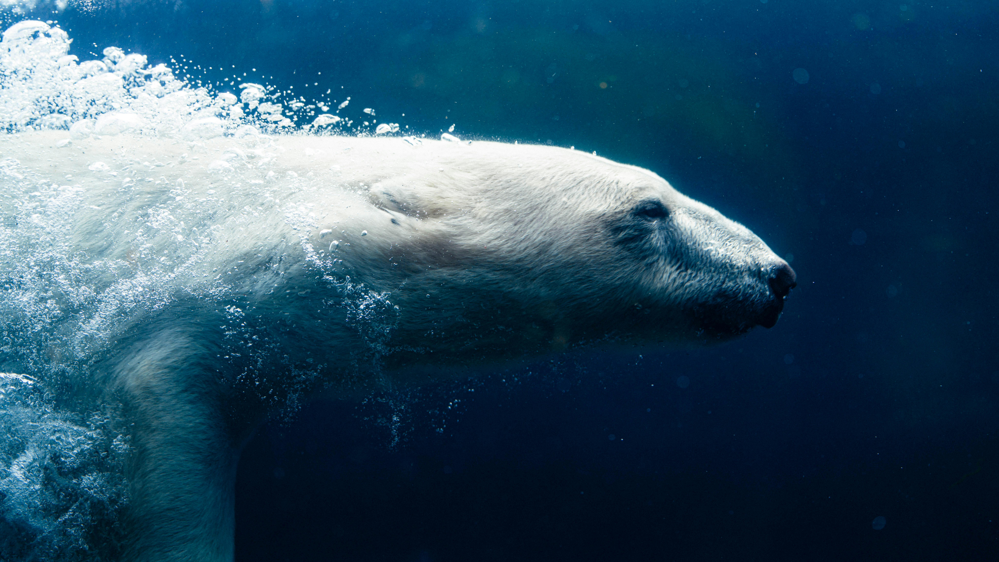
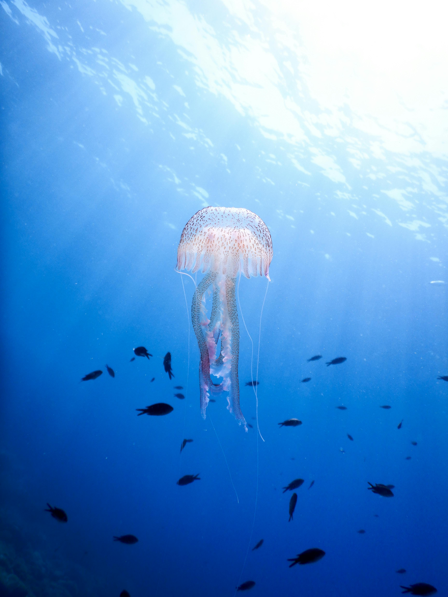

University of Manchester found the highest concentrations of microplastics ever recorded on the ocean floor in a Mediterranean Sea sediment deposit. The study identified up to 1.9 million pieces of microplastic in a single square meter of the seafloor, a finding reported by the BBC
Our One Ocean project has been supported by your donation and we have cleaned 20 ton of waste since 2017.


Help us bring back their home like what it used to be and how it is supposed to be.



